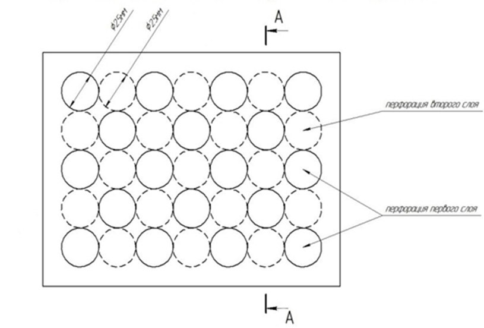

Разрабатываемый композиционный материал, стойкий к динамическому и ударному воздействию, получают сваркой взрывом. Композит состоит минимум из пяти разнородных металлических слоев. Для изготовления композита необходимо использовать легкие высокопрочные сплавы алюминия, например, В95, АБТ-101, АБТ-102 и титана, например, ВТ1-0, ВТ6, ВТ23. Особенность структуры композита: чередование в определенной последовательности прочных, высокотвердых и вязких слоев, а также предусмотрен контакт между слоями металлической матрицы композита через перфорации заданной геометрии в армирующих слоях.